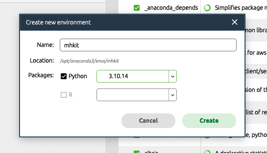
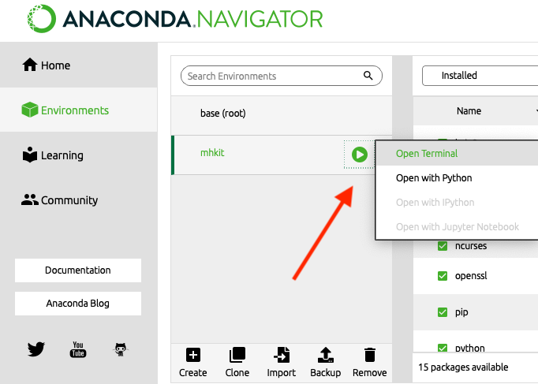
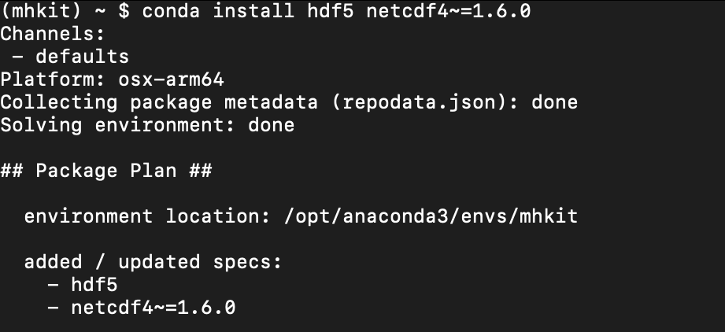
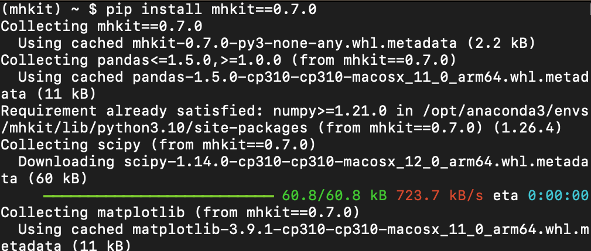
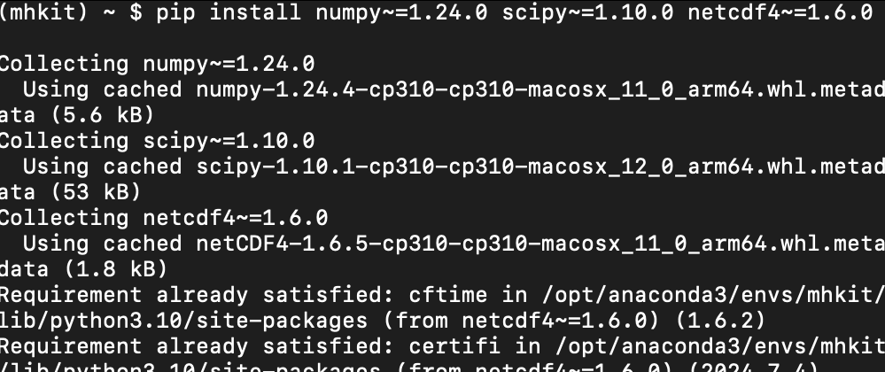
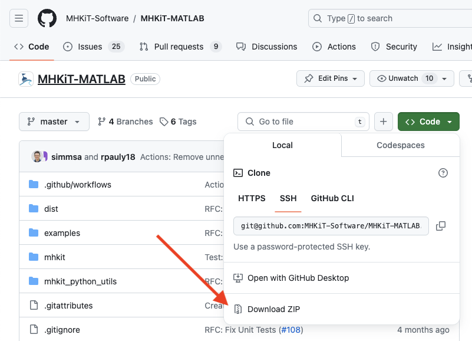
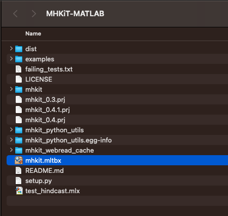
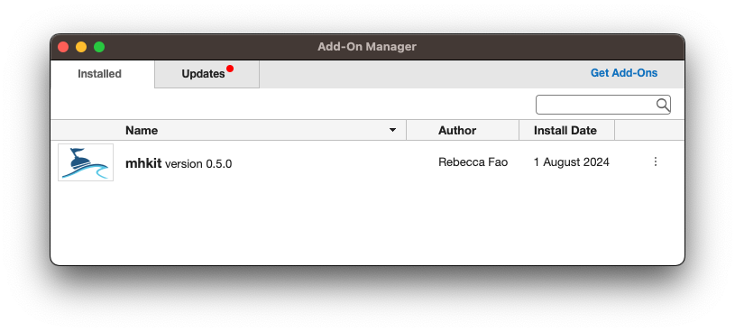

MHKiT-MATLAB Installation
The following section includes instructions for installing MHKiT-MATLAB .
New users should follow the Installation Steps.
Experienced users can follow the Advanced Installation Steps.
Installation Overview
MHKiT-MATLAB utilizes MHKiT-Python to perform some computations and requires installation of Python and MHKiT-Python.
Utilizing MHKiT-Python has the following advantages:
One standardized codebase that performs computations
Bugs fixed in MHKiT-Python are included in MHKiT-MATLAB
Features added to MHKiT-Python are not reinvented in MHKiT-MATLAB
Python can leverage scientific computing tools that are not available in MATLAB
The major disadvantage of using Python is difficulty of installation for the MATLAB user. These installation steps provide the simplest path to getting the MATLAB user up and running with MHKiT-MATLAB. Please submit any issues or improvement suggestions to the MHKiT-MATLAB issues page.
The installation process requires performing the following actions in order:
Required Software
Anaconda: Python version and environment manager
MATLAB: Version 2021b and above. The MHKiT-MATLAB Compatibility Matrix has complete details.
Note
We strongly recommend using Anaconda to manage Python and its dependencies. For MHKiT-MATLAB other variations of Python installations may work, but Anaconda provides a standardized Python installation and usage process that works consistently with MATLAB.
Installation Steps
Step 1. Install Anaconda
Download and install Anaconda.
Step 2. Configure an Anaconda Python Environment
In this step we are going to create a Python environment within Anaconda which will contain an installation of Python, MHKiT-Python, and the required python packages.
2.1 Launch the “Anaconda Navigator” application
2.2 Navigate to the “Environments” section
{kind=link}
2.3 Create a new environment by clicking on the “Create” button
{kind=link}
2.4 Set the environment name and python version to the recommended settings

Name:
mhkit
Note: Environments can have any name, but we recommend naming them based on their intended use
Packages:
Version 3.10
Note: Check the MHKiT-MATLAB MATLAB/Python compatibility matrix to verify that the Python version selected is compatible with your version of MATLAB.
{kind=link}
2.5 Create the environment by clicking “Create”
Anaconda is downloading an entire python environment and all of its dependencies, which typically takes a few minutes
Step 3. Install MHKiT-Python
3.1 Select the newly create environment by clicking on mhkit (the name of your environment)
3.2 Click the play button and select “Open Terminal”
{kind=link}
3.3 Verify that you see (mhkit) at the beginning of your terminal prompt. This indicates that you are within the Anaconda mhkit environment. All actions performed within this environment are isolated from other Anaconda and system Python environments.
{kind=link}
3.4 Install MHKiT-Python Anaconda dependencies. In the terminal input the following command:
conda install hdf5 netcdf4~=1.6.0
And press enter to run this command.
{kind=link}
Note
If this command throws any errors, you must fix them before proceeding! Refer to the troubleshooting section for more details on recommended troubleshooting steps.
3.5 Install MHKiT-Python. In the terminal input the following command:
pip install mhkit==0.7.0
And press enter to run this command.
{kind=link}
Note
If this command throws any errors, you must fix them before proceeding! Refer to the troubleshooting section for more details on recommended troubleshooting steps.
3.6 Update python module for MHKiT-Python compatibility. In the terminal input the following command:
pip install numpy~=1.24.0 scipy~=1.10.0 netcdf4~=1.6.0
And press enter to run this command.
{kind=link}
Note
If this command throws any errors, you must fix them before proceeding! Refer to the troubleshooting section for more details on recommended troubleshooting steps.
3.7 Verify your MHKiT-Python version. In the terminal input the following command:
python -c "import mhkit; print(mhkit.__version__)"
And press enter to run this command.
The expected output is the specified mhkit version number
{kind=link}
3.8 Verify mhkit functionality. In the terminal input the following command:
python -c "import mhkit; print(mhkit.river.performance.circular(30))"
The expected output is:
(30, 706.8583470577034)
{kind=link}
Step 4. Download MHKiT-MATLAB Source Code
4.1 Navigate to the MHKiT-MATLAB GitHub Repository
4.2. Within the “Code” drop-down menu click on “Download ZIP” to download the repository
{kind=link}
4.3. Unzip the downloaded folder in your preferred installation location.
Step 5. Install MHKiT-MATLAB Python utilities
5.1 Navigate to the MHKiT-MATLAB folder using the terminal
Within the Anaconda environments tab, click the play button and select “Open Terminal”
Verify that you see
(mhkit)at the beginning of your terminal prompt.
5.2 Use pip to install MHKiT-MATLAB Python utilities
In the terminal type and press enter:
pip install https://github.com/MHKiT-Software/MHKiT-MATLAB/tarball/master
{kind=link}
5.3 Verify your mhkit_python_utilities version. Expected version is 0.2.0
In the terminal type and press enter:
python -c "import mhkit_python_utils; print(mhkit_python_utils.__version__)"
{kind=link}
Step 6. Configure MATLAB Python Environment
6.1 Compute the python executable location
In the Anaconda
mhkitenvironment terminal type and press enter:python -c "import sys; print(sys.executable)"
And copy the output location:
Typical location on Windows:
C:\ProgramData\anaconda3\envs\mhkit\python.exe
Typical location on MacOS:
/opt/anaconda3/envs/mhkit/bin/python3
6.2 Set the Python environment in MATLAB
In the MATLAB command window type the command below, replacing the <python executable location> with the executable location output from above:
pyenv(Version="<python executable location>")
{kind=link}
Step 7. Install MHKiT-MATLAB Add-On
7.1 Navigate to the MHKiT-MATLAB directory
7.2. Install the MHKiT-MATLAB Add-On by double clicking on mhkit.mltbx toolbox
{kind=link}
7.3 Verify the mhkit Add-On installation
{kind=link}
Step 8. Verify MHKiT-MATLAB Installation
8.1 In the MATLAB command window type:
[x, y] = circular(30)
Verify the output is:
>> [x, y] = circular(30)
x =
30
y =
706.8583
{kind=link}
Congratulations, you now have a working version of MHKiT-MATLAB!
Advanced Installation
Install miniconda.
Create an environment for MHKiT-Python:
Check the MHKiT-MATLAB MATLAB/Python compatibility matrix and select the version of Python compatible with your version of MATLAB.
conda create -n mhkit python=3.10
conda activate mhkit
Install conda dependencies:
conda install netcdf4 hdf5
Use
pipto install MHKiT-Python (mhkit):pip install mhkit==0.7.0 pip install numpy~=1.24.0 scipy~=1.10.0 netcdf4~=1.6.0
python -c "import mhkit; print(mhkit.__version__)"
The expected output is:
v0.7.0
Verify the output from the
circularfunction:python -c "import mhkit; print(mhkit.river.performance.circular(30))"
The expected output is:
(30, 706.8583470577034)
Download/clone MHKiT-MATLAB from the GitHub Repository:
git clone https://github.com/MHKiT-Software/MHKiT-MATLAB.git
Install MHKiT-Python MATLAB Utilities:
cd MHKiT-MATLAB
pip install -e .
Get python executable:
Copy output from:
python -c "import sys; print(sys.executable)"
Set the python executable in MATLAB:
In the MATLAB command window:
pyenv(Version="<python executable path>")
Install the MHKiT-MATLAB “Add-On”:
In the MHKiT-MATLAB folder, double click on
mhkit.mltbxVerify the MHKiT-MATLAB Add-On functionality:
In the MATLAB command window execute:
[x, y] = circular(30)
Verify the output:
x = 30 y = 706.8583
Troubleshooting
Install Supplemental Anaconda Dependencies
Within the
mhkitconda environment execute the following command:conda install numpy cython pip pytest hdf5 libnetcdf cftime netcdf4
Reinstall
mhkit:pip uninstall mhkit pip install mhkit==0.7.0
Verify MHKiT-Python is working properly
In the terminal, execute:
python -c "import mhkit; print(mhkit.river.performance.circular(30))"
The expected output is:
(30, 706.8583470577034)
Errors Upon Running MHKiT-MATLAB
Verify MATLAB python environment is using mhkit conda python executable
In the MATLAB command window execute:
pyenvThe expected output should be similar to:
ans = PythonEnvironment with properties: Version: "3.10" Executable: "/opt/anaconda3/envs/mhkit/bin/python3" Library: "/opt/anaconda3/envs/mhkit/lib/libpython3.10.dylib" Home: "/opt/anaconda3/envs/mhkit" Status: Loaded ExecutionMode: InProcess ProcessID: "29611" ProcessName: "MATLAB"
If
mhkitis not within “Executable”, string your MATLAB installation is not pointing to the MHKiT installation of Python. Repeat step 6 (configure MATLAB python environment) to properly set your python executable location in MATLAB to point to themhkitpython executable.
Add Anaconda binary path to the MATLAB path
Close MATLAB.
Locate the Anaconda environment bin directory:
Inside your MHKiT-Python Anaconda environment, in the terminal, determine the location of the Python binary directory by running:
python -c "import sys; import os; print(os.path.dirname(sys.executable))"
Restart MATLAB and add the output directory from the previous step to the first position in the MATLAB path:
setenv('path', ['<path to Anaconda dir>', getenv('path')])
Reset the MATLAB Python Environment:
Inside your MHKiT-Python Anaconda environment, in the terminal, determine the location of the Python executable by running:
python -c "import sys; print(sys.executable)"
In the MATLAB Command Window, execute:
pyenv(Version="<path to conda python executable>", ExecutionMode="OutOfProcess")
Run the circular example again by repeating step 8.
Other Errors
Check the MHKiT-MATLAB GitHub Issues
Check the MHKiT-Python GitHub Issues
Submit an issue in the MHKiT-MATLAB GitHub repository Issue Tracker